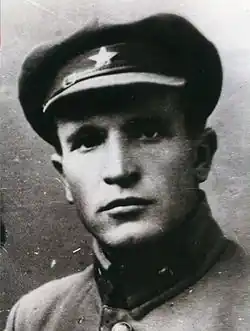

1901 (24.04) — 1947 (27.04)
Ще зовсім недавно наше літературознавство, виконуючи "вказівки згори", вправно зрізало "гострі кути" біографій репресованих письменників. Так, в письменницьких довідниках дати смерті, а правильніше, брехливо перекручені дати смерті, переносились на воєнні або важкі післявоєнні роки... Комусь хотілося списати свої чорні справи на воєнні лихоліття. В біографічних матеріалах про життєвий шлях репресованих письменників страхітливі факти їхніх поневірянь і страждань замовчувались або відверто фальсифікувались. Та народна мудрість проголошує: немає на світі нічого таємного, що не стало б рано чи пізно відомим. Тому й зникають поволі білі плями недавньої історії, і правда пробивається на світ.
Однією з трагічних в українському письменстві є постать нашого земляка Сави Захаровича Божка, справжні факти життя якого тільки недавно стали відомими читачам. Трагізм його долі полягав не лише в тому, що він був репресований тоталітарним режимом сталінської епохи. Відбувши 5 років концтаборів на півночі (1938—1943) і відвоювавши в Радянській Армії на фронтах другої світової війни, С. Божко повернувся у суспільство, де з новою силою і пекельною затятістю розгорталася боротьба з "українським буржуазним націоналізмом". А саме у прихильності до нього й був звинувачений письменник сумнозвісною "трійкою" до війни. Не витримавши глухого муру людської байдужості, він помирає. Блюзнірська реабілітація відбудеться лише в 1960 році. Пам'ять вимагає правдивих свідчень про долю письменника-мученика. роман якого "В степах" зображує історичне минуле нашого краю на грані нинішнього і попереднього століть. Другий роман, назва якого залишається невідомою, про післявоєнні будні донецьких шахтарів припадає пилом десь в архівах колишнього КДБ. Яким же був життєвий шлях С. Божка, чиє ім'я для багатьох читачів невідоме й досі? Сава Захарович Божко народився 24 квітня 1901 року на Катеринославщині, на хуторі Крутоярівка (тепер Межівський район Дніпропетровської області). Виріс він у багатодітній селянській сім'ї. Пас громадську худобу, допомагав на полі і вдома батькам. Вчився у сільській школі, потім у Павлоградській учительській семінарії, а згодом закінчив університет імені Артема в Харкові. До речі, тут вчився в цей же час і Володимир Сосюра, з яким вони приїздили в Крутоярівку, і там про цю подію пам'ятають і досі. С. Божко друкував свої нариси і статті у газетах "Селянська правда", "Студент революції", "Вісті ВУЦВК" та ін. Належав до організації селянських письменників "Плуг" і ВУССП. Брав участь у створенні газети прикордонного округу в Кам'янець-Подільському. Назву цій газеті — "Червоний кордон"— дав С. Божко. Перший номер часопису вийшов у травні 1924 року. Раніше письменник уже опублікував свій перший вірш "Плуг і молот", а з 1922 року прозові твори-оповідання "Козаччина" і "Хмельниччина". Талановитого письменника помітили за кордоном. Так, 1924 року Канадським видавництвом "Пролеткульт" було видано Божкову "Козаччину". У Кам'янець-Подільському в редакції "Червоного кордону" разом з нашим земляком працювали майбутній літературознавець) П. Довгалюк і поет Т. Масенко. Повернувшись з міста над Смотричем до Харкова, С. Божко друкує історичну повість "Над колискою Запоріжжя" (1925). Та, мабуть, цей твір можна точніше назвати нарисом історико-соціологічного змісту, оскільки письменник приділив значну увагу економічним викладкам з історії запорізьких земель, заселенню їх німецькими колоністами та наймитсько-заробітчанським людом. Наступний твір письменника — "Українська Шампань" (1930) — розкриває історію виноградарства на Півдні України від початку XIX століття до кінця 20-х років XX століття. Божко прагне освоїти жанр роману, який був характерним для прози 20-х років. Поряд з соціально-побутовим (А. Головко "Бур'ян"), історико-революційним (О. Досвітній "Америка") з'являються виробничі романи (О. Кузь-мич "Крило"), проблемно-психологічні (В. Підмогильний "Місто", О. Копиленко "Народжується місто"), науково-фантастичні (В. Винниченко "Сонячна машина"), в 1930 році з'являється історичний твір С. Божка "В степах". Він свого часу був високо оцінений критикою "як найвизначніший твір у цілій українській літературі". 1986 року відбулося повернення до читача саме цього роману. Донецький обласний інститут удосконалення вчителів звернувся з пропозицією до СПУ перевидати твір. І це було позитивно сприйнято. Хоча письменник до деякої міри й захоплювався на сторінках роману питаннями соціології більше, ніж того вимагає художнє освоєння життєвого матеріалу, він, як ніхто з його попередників, широко розкрив картини становлення Донеччини як промислово-вугільного краю України. С. Божко починає писати на шахтарську тематику, розроблювану в українській літературі Б. Грінченком, С. Черкасенком, М. Чернявським та ін. Для Божка є характерним багатоплановий погляд на долю шахтарства в контексті суспільно-політичних проблем Донбасу. У романі "В степах" змальовано зародження крупних землевласницьких володінь, розвиток капіталістичних відносин і зародження вугільної промисловості. Багато сторінок твору відводиться показу перетворення невеликого степового містечка значний торгівельний і промисловий центр, своєрідну столицю західного Донбасу. Автор із знанням справи змальовує це місто: "Курів степ копальнями, сходились і з'їздились юрби безробітіньої людності, а пунктом їхнього розподілу була станція Генераш. І коли маси робочої людності розпорошились по копальнях, коли увірвалися в підземні товщі степу, тоді тут і там погнало могили сіро-червоної породи та чорно-синього вугілля. Станція стала місцем розподілу і робочої сили, і вугілля, і хліба. Майдан навколо станції обсіли крамниці й будинки ремісників та містечкового купецтва. Закуріли димарі величезних парових млинів, а забране з околішніх сіл та економій зерно перемелювалось на борошно й шло на копальні та дальше— заводи Донбасу". Цей край був близьким Саві Божку, бо недалеко звідси, в широких степах західного Донбасу, знаходився і його хутір Крутоярівка. А назва цього міста та його опис наштовхують на думку, що перед нами Гришине — теперішній Красноармійськ. У творі ми знайомимось з образами сільських підприємців (граф Шаботинський, Генріх Нейман) і промисловиків-капіталістів різних рангів (Густав Нейман, юрист Шеїн та ін.). Вони зображені в гострій економічній боротьбі за виживання. Одні з них (іноземці) мріють збільшити капітали на донецькій землі, інші — плекають .наміри на загарбання у власні руки багатств іноземців. Так, зокрема, розкривається в романі сюжетна лінія російськоге юриста Шеїна — людини із збіднілого, колись відомого московського боярсь-го роду. Йому на заваді стоять іноземні капіталісти, які спритніше, ніж російські багатії, вміють грабувати українську землю. Чи не бажаними сьогодні для декого з прихильників "єдиної і недєлімої" є такі думки Шейна про українські багатства: "У тій землі, з її надр, руськими руками розкрадаються руські скарби для росту французького, бельгійського та німецького капіталів. Руські люди, руська мова тільки в урядових інституціях та товщах робочого люду. Фінансово-промисловий та землевласницький світ цього багатющого краю жаргонить на всіх мовах. Невже ж задля цього руські царі гнали сюди полки та цілі армії, щоб постачати для Донбасу рабів та погоничів? — думав у такі хвилини Шеїн. Чим дужче зростав в глибині душі повіреного протест, тим жадоба бачити завойовану руськими царями землю, звільнену від чужинців, збільшувалась". Крім багатіїв, у творі зображено колоритні постаті шахтарів Сидорова, Зав'ялова, Квітченка, китайця Го, трудівників панської еканомії. Актуально звучить в романі і тема шахтарських страйків на Донбасі у перші роки ХХ-го століття. Соціальний і психологічний аналіз нашої історії органічо поєднується в романі з описами степової природи, на тлі якої розкриваються людські характери. Ліризм є характерною ознакою стилю письменника. Уже з перших сторінок роману читач поринає у широкий степовий простір, який є часткою душі дійових осіб: "Надходить весна на степи. Ось вона повіває з-за ген того бугра. Через бугор великий чумацький шлях аж до Маріуполя. Це ж оцим шляхом на крилах теплого азовського вітру вона лине — пливе. Легенька, південно-східна сором-Диво ступає випещеними ніжками по снігових наметах: торкнеться льодового сугробу — стрибає через яри та балочки, припадає злегка до узгір'їв, торкнеться пругкими молодими грудьми високого бугра, м'яко цілує його чоло що од поцілунків тих гарячих чорними латками покривається..." Письменник зображує степ в усі пори року: навесні, влітку, восени і взимку. Передає його різноманітну, таку дорогу степовикові красу. Мова героїв твору індивідуалізована, передусім відповідає їхньому соціальному статусу. На сторінках роману автор відтворив і переповів устами героїв звичаї степового краю. Звернувся він, природно, і до шахтарського фольклору, продовживши цим самим традиції попередників, особливо С.Черкасенка. У 1932 році письменник переїздить до Херсона. Чому він покинув столицю, сьогодні зўясувати важко. Вірогідно, що рятувався від репресій, які вже починали розгортатись в Україні: смерть Хвильового та Скрипника, справа з Спілкою Визволення України, явно сфабрикованою спецорганами. Все це, напевне, змусило нашого земляка виїхати до периферійного міста. Там він викладав політекономію в педагогічному інституті та у Всеукраїнському заочному інституті масової партосвіти. В той час письменник виступив на сторінках місцевої газети "Наддніпрянська правда", надрукувавши зокрема в ній кілька розділів роману "До моря". Та творча праця продовжувалась недовго. Кільце репресій навколо нього звужувалось, і ось 14 листопада 1935 року бюро Херсонського міськкому партії розглянуло його справу і виявило, що, працюючи в Харкові, С. Божко "протягував націоналістичні ухили, боротьбу з Хвильовим розцінював як боротьбу за наркомівське місце". Письменника С. Божка було виключено з партії. Можна тільки уявити, яким після цього стало життя письменника. Та все ж він продовжував писати.У 1936 році закінчив роботу згадував літературозна-вець, П.